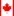
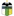
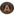
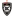
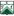
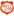
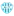
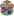

🏆 EURO 2024
| Date | Fixture  Bold-faced team is selected by AIGoalie to win. Bold-faced team is selected by AIGoalie to win. |
Odds Pre-match odds of the selected team winning. Note that odds are fetched once per day at 00:00 GMT, meaning some matches may have live odds. Also odds may not be available for all leagues. |
Win How confident AIGoalie is that the selected team will win. Low confidence indicates unpredictability of the match. ▼ |
Result Whether the selected team won, drew, or lost. |
Over The minimum number of goals predicted by AIGoalie. ⚽ = over 0.5 ⚽⚽ = over 1.5 ⚽⚽⚽ = over 2.5 ... ► |
Alerts Home 🏥 = Considerable injuries 🏥🏥 = Major injuries 📉 = Dip in form Note, you may see injuries when expanding match but no alert here, meaning the model does not consider them important. |
Alerts Away 🏥 = Considerable injuries 🏥🏥 = Major injuries 📉 = Dip in form Note, you may see injuries when expanding match but no alert here, meaning the model does not consider them important. |
|
|---|---|---|---|---|---|---|---|---|
| Sun. 30 Jun. | England  2:1 AET  Slovakia Form: DDWW Form: WLDL |
1.59 vs -1.59 | 1.45 | 76% | ✓ | ⚽ 1.21 |
📉 Away team has a dip in form recently | |
| Sun. 30 Jun. | Spain  4:1  Georgia Form: WWWW Form: LDWL |
1.1 vs -1.24 | 1.22 | 71% | ✓ | ⚽⚽⚽ 3.7 |
📉 Away team has a dip in form recently |
🏆 Copa América 2024
| Date | Fixture Bold-faced team is selected by AIGoalie to win. |
Odds Pre-match odds of the selected team winning. Note that odds are fetched once per day at 00:00 GMT, meaning some matches may have live odds. Also odds may not be available for all leagues. |
Win How confident AIGoalie is that the selected team will win. Low confidence indicates unpredictability of the match. ▼ |
Result Whether the selected team won, drew, or lost. |
Over The minimum number of goals predicted by AIGoalie. ⚽ = over 0.5 ⚽⚽ = over 1.5 ⚽⚽⚽ = over 2.5 ... ► |
Alerts Home 🏥 = Considerable injuries 🏥🏥 = Major injuries 📉 = Dip in form Note, you may see injuries when expanding match but no alert here, meaning the model does not consider them important. |
Alerts Away 🏥 = Considerable injuries 🏥🏥 = Major injuries 📉 = Dip in form Note, you may see injuries when expanding match but no alert here, meaning the model does not consider them important. |
|
|---|---|---|---|---|---|---|---|---|
| Sun. 30 Jun. | Argentina  2:0  Peru Form: WWWW Form: WDLL |
1.25 vs -2.12 | 1.53 | 72% | ✓ | 😴 0.39 |
📉 Away team has a dip in form recently | |
| Sun. 30 Jun. | Canada  0:0  Chile Form: LWDW Form: WDLD |
0.05 vs -1.13 | 3.1 | 14% | ⁃ | ⚽ 1.09 |
🏥 📉 Away team has considerable injuries and a dip in form recently |
🌍 Global
| Date | Fixture Bold-faced team is selected by AIGoalie to win. |
Odds Pre-match odds of the selected team winning. Note that odds are fetched once per day at 00:00 GMT, meaning some matches may have live odds. |
Win How confident AIGoalie is that the selected team will win. Low confidence indicates unpredictability of the match. ▼ |
Result Whether the selected team won, drew, or lost. |
Over The minimum number of goals predicted by AIGoalie. ⚽ = over 0.5 ⚽⚽ = over 1.5 ⚽⚽⚽ = over 2.5 ... ► |
Alerts Home 🏥 = Considerable injuries 🏥🏥 = Major injuries 📉 = Dip in form Note, you may see injuries when expanding match but no alert here, meaning the model does not consider them important. |
Alerts Away 🏥 = Considerable injuries 🏥🏥 = Major injuries 📉 = Dip in form Note, you may see injuries when expanding match but no alert here, meaning the model does not consider them important. |
|
|---|---|---|---|---|---|---|---|---|
| Sun. 30 Jun. | Kaya FC-Iloilo  3:2  Stallion Laguna FC Form: WLLL Form: WLWL |
1.77 vs -2.65 | 1.12 | 78% | ✓ | ⚽⚽⚽⚽⚽ 5.98 |
📉 Home team has a dip in form recently | 📉 Away team has a dip in form recently |
| Sun. 30 Jun. | England 2:1 AET Slovakia Form: DDWW Form: WLDL |
1.59 vs -1.59 | 1.45 | 76% | ✓ | ⚽ 1.21 |
📉 Away team has a dip in form recently | |
| Sun. 30 Jun. | FK Istaravshan  postponed  Istiqlol Dushanbe Form: WWDL Form: WWWW |
-1.95 vs 1.53 | 75% | ⚽⚽ 2.44 |
📉 Home team has a dip in form recently | |||
| Sun. 30 Jun. | Argentina 2:0 Peru Form: WWWW Form: WDLL |
1.25 vs -2.12 | 1.53 | 72% | ✓ | 😴 0.39 |
📉 Away team has a dip in form recently | |
| Sun. 30 Jun. | Víkingur Reykjavík  2:1  Fram Reykjavík Form: WDLD Form: DWWL |
1.17 vs -2.04 | 1.41 | 72% | ✓ | ⚽⚽ 2.68 |
📉 Home team has a dip in form recently | 📉 Away team has a dip in form recently |
| Sun. 30 Jun. | CSD Colo-Colo  3:1  CD O'Higgins Form: WDWD Form: WWDL |
1.11 vs -1.91 | 1.55 | 71% | ✓ | ⚽ 1.8 |
📉 Home team has a dip in form recently | 📉 Away team has a dip in form recently |
| Sun. 30 Jun. | Spain 4:1 Georgia Form: WWWW Form: LDWL |
1.1 vs -1.24 | 1.22 | 71% | ✓ | ⚽⚽⚽ 3.7 |
📉 Away team has a dip in form recently | |
| Sun. 30 Jun. | CA Colón  1:1  CA Atlanta Form: DLDD Form: LWDD |
0.98 vs -1.71 | 1.62 | 69% | ⁃ | ⚽ 1.25 |
📉 Home team has a dip in form recently | 📉 Away team has a dip in form recently |
| Sun. 30 Jun. | Suwon Samsung Bluewings  1:1  Ansan Greeners Form: LWDD Form: LWDL |
0.92 vs -1.78 | 1.44 | 67% | ⁃ | ⚽ 1.52 |
📉 Home team has a dip in form recently | 📉 Away team has a dip in form recently |
| Sun. 30 Jun. | Taiwan Leopard Cat FC  3:3  Taipei Vikings Form: LWLD Form: LLWD |
0.9 vs -1.66 | 1.1 | 66% | ⁃ | ⚽⚽⚽ 3.58 |
📉 Home team has a dip in form recently | 📉 Away team has a dip in form recently |
| Sun. 30 Jun. | Chengdu Rongcheng  4:0  Cangzhou Mighty Lions Form: DWWW Form: LLLL |
0.82 vs -1.78 | 1.16 | 63% | ✓ | ⚽⚽⚽ 3.32 |
📉 Away team has a dip in form recently | |
| Sun. 30 Jun. | IFK Mariehamn  1:2  HJK Helsinki Form: LWLL Form: WLWL |
-1.47 vs 0.8 | 1.76 | 62% | ✓ | ⚽ 1.76 |
📉 Home team has a dip in form recently | 📉 Away team has a dip in form recently |
| Sun. 30 Jun. | Yunnan Yukun  5:0  Liaoning Tieren Form: WWLW Form: DWLL |
0.79 vs -1.71 | 1.27 | 62% | ✓ | ⚽⚽ 2.4 |
📉 Home team has a dip in form recently | 📉 Away team has a dip in form recently |
| Sun. 30 Jun. | 07 Vestur  1:0  ÍF Fuglafjördur Form: LWWL Form: LLLL |
0.78 vs -1.7 | 61% | ✓ | ⚽⚽ 2.42 |
📉 Home team has a dip in form recently | 📉 Away team has a dip in form recently | |
| Sun. 30 Jun. | BK Maxline Vitebsk  1:2  FK Baranovichi Form: LWLL Form: LLWD |
0.73 vs -1.58 | 59% | ❌ | ⚽⚽ 2.47 |
📉 Home team has a dip in form recently | 📉 Away team has a dip in form recently | |
| Sun. 30 Jun. | New Taipei City Hang Yuan FC  1:1  Tainan City Taiwan Steel Form: LLDD Form: WWWD |
-1.26 vs 0.7 | 1.12 | 58% | ⁃ | ⚽⚽ 2.6 |
📉 Home team has a dip in form recently | |
| Sun. 30 Jun. | CA San Martín (San Juan)  1:0  CA Güemes Form: DDWL Form: DLLD |
0.69 vs -1.53 | 1.75 | 58% | ✓ | 😴 0.76 |
📉 Home team has a dip in form recently | 📉 Away team has a dip in form recently |
| Sun. 30 Jun. | Ha Noi FC  3:3  Becamex Binh Duong FC Form: WDWL Form: LLDD |
0.66 vs -1.35 | 57% | ⁃ | ⚽⚽ 2.78 |
📉 Home team has a dip in form recently | 📉 Away team has a dip in form recently | |
| Sun. 30 Jun. | Atlanta United FC  2:1  Toronto FC Form: DWLL Form: LLLL |
0.62 vs -1.67 | 1.81 | 55% | ✓ | ⚽⚽ 2.44 |
📉 Home team has a dip in form recently | 🏥 📉 Away team has considerable injuries and a dip in form recently |
| Sun. 30 Jun. | Shimizu S-Pulse  3:1  Fagiano Okayama Form: LLWW Form: WWLW |
0.62 vs -1.46 | 2.02 | 55% | ✓ | ⚽⚽ 2.08 |
📉 Home team has a dip in form recently | 📉 Away team has a dip in form recently |
| Sun. 30 Jun. | Urawa Red Diamonds  3:0  Júbilo Iwata Form: DWWL Form: DWLD |
0.61 vs -1.45 | 54% | ✓ | ⚽ 1.83 |
📉 Home team has a dip in form recently | 📉 Away team has a dip in form recently | |
| Sun. 30 Jun. | Orange County SC  0:2  Oakland Roots SC Form: WLLW Form: WLWW |
0.59 vs -1.19 | 2.42 | 54% | ❌ | ⚽ 1.52 |
📉 Home team has a dip in form recently | 📉 Away team has a dip in form recently |
| Sun. 30 Jun. | CR Flamengo  2:1  Cruzeiro Esporte Clube Form: LWWD Form: LWLL |
0.59 vs -1.74 | 1.72 | 54% | ✓ | ⚽ 1.17 |
🏥🏥 Home team has MAJOR injuries | 🏥 📉 Away team has considerable injuries and a dip in form recently |
| Sun. 30 Jun. | San Antonio FC  2:3  New Mexico United Form: LLLW Form: WLWW |
0.58 vs -1.25 | 53% | ❌ | ⚽ 1.67 |
📉 Home team has a dip in form recently | 📉 Away team has a dip in form recently | |
| Sun. 30 Jun. | Ceará Sporting Club  4:2  Ituano Futebol Clube (SP) Form: DLWL Form: DDLW |
0.58 vs -1.69 | 53% | ✓ | ⚽ 1.62 |
📉 Home team has a dip in form recently | 📉 Away team has a dip in form recently | |
| Sun. 30 Jun. | Athletic Club Taipei  5:0  Ming Chuan University Form: WLLW Form: WLDL |
0.58 vs -1.48 | 1.17 | 53% | ✓ | ⚽ 1.85 |
📉 Home team has a dip in form recently | 📉 Away team has a dip in form recently |
| Sun. 30 Jun. | JEF United Chiba  2:1  Kagoshima United Form: WLWL Form: WWLL |
0.54 vs -1.44 | 1.58 | 52% | ✓ | ⚽⚽ 2.0 |
📉 Home team has a dip in form recently | 📉 Away team has a dip in form recently |
| Sun. 30 Jun. | Quang Nam FC  1:3  Thep Xanh Nam Dinh FC Form: WWLL Form: WWWL |
-1.0 vs 0.54 | 1.81 | 52% | ✓ | ⚽⚽ 2.63 |
📉 Home team has a dip in form recently | 📉 Away team has a dip in form recently |
| Sun. 30 Jun. | AA Estudiantes (Río Cuarto)  2:1  CA Defensores Unidos (Zarate) Form: WLWD Form: DLWL |
0.51 vs -1.45 | 1.88 | 50% | ✓ | 😴 0.86 |
📉 Home team has a dip in form recently | 📉 Away team has a dip in form recently |
| Sun. 30 Jun. | Los Angeles FC  3:0  Colorado Rapids Form: DWWW Form: WWLW |
0.5 vs -1.36 | 1.49 | 50% | ✓ | ⚽⚽ 2.26 |
📉 Away team has a dip in form recently | |
| Sun. 30 Jun. | CF América  2:1  Tigres UANL Form: DWWL Form: LDLW |
0.5 vs -1.26 | 2.54 | 50% | ✓ | ⚽ 1.78 |
📉 Home team has a dip in form recently | 📉 Away team has a dip in form recently |
| Sun. 30 Jun. | CD Palestino  3:0  AC Barnechea Form: WLWD Form: DWWL |
0.5 vs -1.2 | 1.51 | 50% | ✓ | ⚽ 1.48 |
📉 Home team has a dip in form recently | 📉 Away team has a dip in form recently |
| Sun. 30 Jun. | Audax Italiano  0:2  Deportes Santa Cruz Form: LWDL Form: WDWD |
0.49 vs -1.15 | 1.6 | 50% | ❌ | ⚽ 1.41 |
📉 Home team has a dip in form recently | 📉 Away team has a dip in form recently |
| Sun. 30 Jun. | FK Kokand 1912  0:1  Olimpik-Mobiuz Tashkent Form: DDLL Form: LLWL |
0.43 vs -1.0 | 45% | ❌ | ⚽⚽ 2.05 |
📉 Home team has a dip in form recently | 📉 Away team has a dip in form recently | |
| Sun. 30 Jun. | Sacramento Republic FC  1:0  Hartford Athletic Form: LDWL Form: WLLL |
0.43 vs -1.37 | 1.54 | 44% | ✓ | ⚽ 1.61 |
📉 Home team has a dip in form recently | 📉 Away team has a dip in form recently |
| Sun. 30 Jun. | The Cong - Viettel FC  0:2  Song Lam Nghe An FC Form: DWLL Form: LLDW |
0.42 vs -1.27 | 1.35 | 44% | ❌ | ⚽ 1.34 |
📉 Home team has a dip in form recently | 📉 Away team has a dip in form recently |
| Sun. 30 Jun. | CD Ñublense  4:0  Rangers de Talca Form: WWDW Form: WLDW |
0.4 vs -0.93 | 42% | ✓ | ⚽ 1.97 |
📉 Away team has a dip in form recently | ||
| Sun. 30 Jun. | Torpedo-BelAZ 2 Zhodino  1:1  Shakhter 2 Soligorsk Form: LLDL Form: LLDL |
0.38 vs -1.04 | 40% | ⁃ | ⚽⚽ 2.38 |
📉 Home team has a dip in form recently | 📉 Away team has a dip in form recently | |
| Sun. 30 Jun. | Club Atlético San Martín (Tucumán)  2:1  CD Maipú Form: WDLW Form: WLLW |
0.36 vs -1.06 | 1.77 | 39% | ✓ | ⚽ 1.13 |
📉 Home team has a dip in form recently | 📉 Away team has a dip in form recently |
| Sun. 30 Jun. | CA Aldosivi  1:0  CSD Madryn Form: WDWL Form: DWLW |
0.35 vs -1.2 | 2.24 | 38% | ✓ | 😴 0.08 |
📉 Home team has a dip in form recently | 📉 Away team has a dip in form recently |
| Sun. 30 Jun. | New York Red Bulls  2:2  D.C. United Form: DWDD Form: LDLL |
0.35 vs -1.4 | 1.54 | 38% | ⁃ | ⚽⚽ 2.34 |
📉 Home team has a dip in form recently | 📉 Away team has a dip in form recently |
| Sun. 30 Jun. | Riga FC II  2:1  Valmiera FC II Form: WDWW Form: LWLL |
0.34 vs -1.06 | 37% | ✓ | ⚽⚽ 2.26 |
📉 Away team has a dip in form recently | ||
| Sun. 30 Jun. | Nashville SC  1:2  Inter Miami CF Form: WWLL Form: WWWL |
-1.28 vs 0.32 | 1.09 | 35% | ✓ | ⚽⚽⚽ 3.33 |
📉 Home team has a dip in form recently | 🏥🏥 📉 Away team has MAJOR injuries and a dip in form recently |
| Sun. 30 Jun. | Nasaf Qarshi  3:2  Navbahor Namangan Form: LWDW Form: DLLW |
0.31 vs -0.9 | 35% | ✓ | ⚽ 1.3 |
📉 Away team has a dip in form recently | ||
| Sun. 30 Jun. | Stade Tunisien  2:0  Club Athlétique Bizertin Form: DWWW Form: WWWL |
0.31 vs -1.16 | 1.09 | 35% | ✓ | 😴 0.71 |
📉 Away team has a dip in form recently | |
| Sun. 30 Jun. | Avaí FC  1:1  Amazonas FC Form: WDDD Form: LDWD |
0.3 vs -0.99 | 1.79 | 34% | ⁃ | ⚽ 1.06 |
📉 Home team has a dip in form recently | 📉 Away team has a dip in form recently |
| Sun. 30 Jun. | Guarani Futebol Clube (SP)  1:1  Associação Atlética Ponte Preta Form: DLDL Form: LWDD |
0.3 vs -1.17 | 34% | ⁃ | 😴 0.81 |
📉 Home team has a dip in form recently | 📉 Away team has a dip in form recently | |
| Sun. 30 Jun. | Fjölnir Reykjavík  5:2  ÍF Grótta Form: WLDW Form: WDWD |
0.29 vs -1.2 | 33% | ✓ | ⚽⚽ 2.02 |
📉 Home team has a dip in form recently | 📉 Away team has a dip in form recently | |
| Sun. 30 Jun. | Yelimay Semey  1:1  Zhetysu Taldykorgan Form: WDDD Form: DLDL |
0.27 vs -1.0 | 32% | ⁃ | ⚽ 1.86 |
📉 Home team has a dip in form recently | 📉 Away team has a dip in form recently | |
| Sun. 30 Jun. | Thróttur Reykjavík  1:0  UMF Grindavík Form: DWLL Form: WDDD |
-0.96 vs 0.26 | 2.22 | 31% | ❌ | ⚽⚽ 2.48 |
📉 Home team has a dip in form recently | 📉 Away team has a dip in form recently |
| Sun. 30 Jun. | Colorado Springs Switchbacks FC  1:0  Monterey Bay FC Form: WDWW Form: LWLW |
0.25 vs -0.99 | 30% | ✓ | ⚽ 1.13 |
📉 Away team has a dip in form recently | ||
| Sun. 30 Jun. | Isloch Minsk Region  1:1  Dnepr Mogilev Form: WLDW Form: LLDL |
0.25 vs -0.93 | 30% | ⁃ | ⚽ 1.41 |
📉 Home team has a dip in form recently | 📉 Away team has a dip in form recently | |
| Sun. 30 Jun. | Loudoun United FC  2:0  Tampa Bay Rowdies Form: DDWW Form: WWLD |
-0.9 vs 0.23 | 1.86 | 28% | ❌ | ⚽⚽ 2.13 |
📉 Away team has a dip in form recently | |
| Sun. 30 Jun. | Arsenal Dzerzhinsk  0:3  Naftan Novopolotsk Form: WWLL Form: DLWL |
0.22 vs -1.09 | 28% | ❌ | ⚽⚽⚽ 3.32 |
📉 Home team has a dip in form recently | 📉 Away team has a dip in form recently | |
| Sun. 30 Jun. | New Zealand 3:0  Vanuatu Form: WWWW Form: WLWL |
0.22 vs -0.82 | 27% | ✓ | ⚽⚽ 2.37 |
📉 Away team has a dip in form recently | ||
| Sun. 30 Jun. | Qingdao Red Lions  0:1  Heilongjiang Ice City Form: WLLL Form: WLLW |
0.21 vs -1.08 | 1.1 | 26% | ❌ | ⚽ 1.98 |
📉 Home team has a dip in form recently | 📉 Away team has a dip in form recently |
| Sun. 30 Jun. | ZSKA Dushanbe  0:0  Panjshir Balch Form: DDWL Form: DLWL |
0.2 vs -1.0 | 26% | ⁃ | 😴 0.8 |
📉 Home team has a dip in form recently | 📉 Away team has a dip in form recently | |
| Sun. 30 Jun. | ZSKA Dushanbe 0:0 Panjshir Balch Form: DDWL Form: DLWL |
0.2 vs -1.0 | 26% | ⁃ | 😴 0.8 |
📉 Home team has a dip in form recently | 📉 Away team has a dip in form recently | |
| Sun. 30 Jun. | Loyola FC  0:6  United City FC Form: WLLL Form: DWWD |
-0.4 vs 0.2 | 1.03 | 26% | ✓ | ⚽⚽⚽ 3.83 |
📉 Home team has a dip in form recently | |
| Sun. 30 Jun. | Seattle Sounders FC  2:1  Chicago Fire FC Form: DWWW Form: WLLW |
0.2 vs -1.07 | 1.71 | 26% | ✓ | ⚽ 1.74 |
📉 Away team has a dip in form recently | |
| Sun. 30 Jun. | Portland Timbers  3:2  Minnesota United FC Form: WWWL Form: LLLL |
0.16 vs -0.76 | 1.81 | 23% | ✓ | ⚽⚽⚽ 3.09 |
📉 Home team has a dip in form recently | 📉 Away team has a dip in form recently |
| Sun. 30 Jun. | Gwangju FC  2:1  Jeju United Form: LLWL Form: LWLW |
0.16 vs -1.34 | 1.92 | 23% | ✓ | ⚽ 1.71 |
📉 Home team has a dip in form recently | 🏥 📉 Away team has considerable injuries and a dip in form recently |
| Sun. 30 Jun. | Qingdao West Coast  0:1 Shanghai Shenhua Form: LWLL Form: DWWW |
-0.72 vs 0.15 | 1.26 | 22% | ✓ | ⚽ 1.61 |
📉 Home team has a dip in form recently | |
| Sun. 30 Jun. | Las Vegas Lights FC  2:0  Pittsburgh Riverhounds SC Form: DDWW Form: LDLL |
0.14 vs -0.86 | 2.84 | 21% | ✓ | ⚽ 1.23 |
📉 Away team has a dip in form recently | |
| Sun. 30 Jun. | Örgryte IS  2:0  Skövde AIK Form: WDLW Form: DLLL |
0.14 vs -0.93 | 1.77 | 21% | ✓ | ⚽ 1.95 |
📉 Home team has a dip in form recently | 📉 Away team has a dip in form recently |
| Sun. 30 Jun. | Changchun Yatai  5:0  Qingdao Hainiu Form: LWDW Form: WWLL |
0.14 vs -1.05 | 2.1 | 21% | ✓ | ⚽ 1.69 |
📉 Away team has a dip in form recently | |
| Sun. 30 Jun. | Belshina Bobruisk  1:0  BATE 2 Borisov Form: DWWW Form: LWLW |
0.13 vs -0.7 | 20% | ✓ | ⚽ 1.8 |
📉 Away team has a dip in form recently | ||
| Sun. 30 Jun. | MerryLand Quy Nhon Binh Dinh FC  4:1  Cong An Ha Noi FC Form: WWDW Form: LWWL |
-0.9 vs 0.13 | 20% | ❌ | ⚽ 1.9 |
📉 Away team has a dip in form recently | ||
| Sun. 30 Jun. | Cerezo Osaka  2:1  Nagoya Grampus Form: DWWD Form: LLLL |
0.13 vs -1.06 | 2.38 | 20% | ✓ | ⚽ 1.1 |
🏥 📉 Away team has considerable injuries and a dip in form recently | |
| Sun. 30 Jun. | Incheon United  0:1  Gangwon FC Form: LLLD Form: LLWW |
0.11 vs -0.97 | 2.3 | 19% | ❌ | ⚽ 1.86 |
📉 Home team has a dip in form recently | 📉 Away team has a dip in form recently |
| Sun. 30 Jun. | Clube Atlético Mineiro  1:1  Atlético Clube Goianiense Form: DLDL Form: DDLL |
0.11 vs -1.05 | 19% | ⁃ | ⚽⚽ 2.01 |
🏥🏥 📉 Home team has MAJOR injuries and a dip in form recently | 📉 Away team has a dip in form recently | |
| Sun. 30 Jun. | Davao Aguilas FC  8:0  Maharlika Taguig FC Form: DLWL Form: LWWL |
0.1 vs -0.82 | 1.09 | 18% | ✓ | ⚽ 1.65 |
📉 Home team has a dip in form recently | 📉 Away team has a dip in form recently |
| Sun. 30 Jun. | Vissel Kobe  3:1  Kashima Antlers Form: LDWW Form: DDLW |
0.1 vs -0.83 | 1.98 | 18% | ✓ | ⚽⚽ 2.17 |
📉 Away team has a dip in form recently | |
| Sun. 30 Jun. | CD Morón  0:0  Club Almagro Form: LDDD Form: DLDD |
0.09 vs -1.04 | 1.8 | 18% | ⁃ | ⚽ 1.26 |
📉 Home team has a dip in form recently | 📉 Away team has a dip in form recently |
| Sun. 30 Jun. | FK Aktobe  3:4  Tobol Kostanay Form: LWLL Form: LDWW |
0.09 vs -0.81 | 1.56 | 17% | ❌ | ⚽ 1.72 |
📉 Home team has a dip in form recently | |
| Sun. 30 Jun. | FC Tokyo  0:1  Avispa Fukuoka Form: WWLL Form: DWWL |
0.08 vs -0.69 | 2.54 | 17% | ❌ | ⚽⚽ 2.01 |
📉 Home team has a dip in form recently | 🏥 📉 Away team has considerable injuries and a dip in form recently |
| Sun. 30 Jun. | Dalvík/Reynir  0:1  Leiknir Reykjavík Form: LWLD Form: LLWL |
0.08 vs -0.53 | 2.72 | 16% | ❌ | ⚽⚽ 2.47 |
📉 Home team has a dip in form recently | 📉 Away team has a dip in form recently |
| Sun. 30 Jun. | Canada 0:0 Chile Form: LWDW Form: WDLD |
0.05 vs -1.13 | 3.1 | 14% | ⁃ | ⚽ 1.09 |
🏥 📉 Away team has considerable injuries and a dip in form recently | |
| Sun. 30 Jun. | Volna Pinsk  3:2  FK Ostrovets Form: WLWW Form: DWLD |
0.05 vs -0.77 | 14% | ✓ | ⚽⚽ 2.16 |
📉 Home team has a dip in form recently | 📉 Away team has a dip in form recently | |
| Sun. 30 Jun. | Paysandu SC  1:1  Operário Ferroviário Esporte Clube (PR) Form: DWDD Form: WLDL |
0.04 vs -0.72 | 2.16 | 13% | ⁃ | 😴 0.71 |
📉 Home team has a dip in form recently | 📉 Away team has a dip in form recently |
| Sun. 30 Jun. | Fortaleza Esporte Clube  2:1  Esporte Clube Juventude Form: WWLW Form: LWLL |
0.02 vs -1.07 | 1.73 | 12% | ✓ | ⚽⚽ 2.14 |
🏥 📉 Home team has considerable injuries and a dip in form recently | 📉 Away team has a dip in form recently |
| Sun. 30 Jun. | CA Chacarita Juniors  1:1  Club Ferro Carril Oeste Form: LWWD Form: WLDD |
0.02 vs -0.72 | 2.38 | 11% | ⁃ | ⚽⚽ 2.03 |
📉 Away team has a dip in form recently | |
| Sun. 30 Jun. | UMF Njardvík  2:5  UMF Afturelding Form: DWLL Form: DWWD |
-0.68 vs 0.02 | 2.84 | 11% | ✓ | ⚽⚽⚽ 3.35 |
📉 Home team has a dip in form recently | |
| Sun. 30 Jun. | FK Slutsk  1:0  FK Minsk Form: LLWW Form: DLLL |
0.02 vs -0.89 | 11% | ✓ | 😴 0.97 |
📉 Home team has a dip in form recently | 📉 Away team has a dip in form recently | |
| Sun. 30 Jun. | Houston Dynamo FC  1:0  Charlotte FC Form: DWWL Form: DWLL |
0.01 vs -0.77 | 1.25 | 11% | ✓ | ⚽⚽ 2.11 |
📉 Home team has a dip in form recently | 📉 Away team has a dip in form recently |
| Sun. 30 Jun. | CA Mitre  2:0  AMSD Atlético de Rafaela Form: DDWL Form: LLLD |
0.01 vs -0.82 | 1.87 | 11% | ✓ | 😴 0.48 |
📉 Home team has a dip in form recently | 📉 Away team has a dip in form recently |
| Sun. 30 Jun. | FC Hegelmann  3:1  FK Zalgiris Vilnius Form: LDWW Form: WWLL |
-0.45 vs -0.03 | 1.83 | 9% | ❌ | ⚽⚽ 2.27 |
📉 Away team has a dip in form recently | |
| Sun. 30 Jun. | Tahiti  2:1  Fiji Form: DLLW Form: WWLL |
-0.03 vs -0.37 | 9% | ✓ | ⚽⚽ 2.38 |
📉 Home team has a dip in form recently | 📉 Away team has a dip in form recently | |
| Sun. 30 Jun. | Blaublitz Akita  0:3  Montedio Yamagata Form: LWLL Form: LDWW |
-0.66 vs -0.03 | 3.2 | 9% | ✓ | 😴 0.73 |
📉 Home team has a dip in form recently | |
| Sun. 30 Jun. | IF Gnistan  1:2  Ekenäs IF Form: LDLL Form: WWLW |
-0.04 vs -0.36 | 1.74 | 9% | ❌ | ⚽⚽ 2.93 |
📉 Home team has a dip in form recently | 📉 Away team has a dip in form recently |
| Sun. 30 Jun. | Foshan Nanshi  2:0  Yanbian Longding Form: DWLW Form: LLDL |
-0.04 vs -0.99 | 3.3 | 9% | ✓ | ⚽ 1.65 |
📉 Home team has a dip in form recently | 📉 Away team has a dip in form recently |
| Sun. 30 Jun. | Sporting Kansas City  2:0  Austin FC Form: LLWL Form: DWLW |
-0.06 vs -0.89 | 1.23 | 9% | ✓ | ⚽⚽ 2.34 |
📉 Home team has a dip in form recently | 📉 Away team has a dip in form recently |
| Sun. 30 Jun. | Vancouver Whitecaps FC  4:3  St. Louis CITY SC Form: LWWD Form: LDLW |
-0.07 vs -0.99 | 1.69 | 9% | ✓ | ⚽⚽ 2.52 |
📉 Away team has a dip in form recently | |
| Sun. 30 Jun. | CSD Tristan Suarez  2:2  Club Almirante Brown Form: WWDL Form: LLDD |
-0.07 vs -0.75 | 1.91 | 9% | ⁃ | ⚽ 1.16 |
📉 Home team has a dip in form recently | 📉 Away team has a dip in form recently |
| Sun. 30 Jun. | Birmingham Legion FC  1:4  Louisville City FC Form: WWLL Form: WLWL |
-0.09 vs -0.53 | 2.54 | 8% | ❌ | ⚽⚽ 2.67 |
📉 Home team has a dip in form recently | 📉 Away team has a dip in form recently |
| Sun. 30 Jun. | ÍR Reykjavík  1:1  Thór Akureyri Form: LWDL Form: DLDD |
-0.6 vs -0.1 | 8% | ⁃ | ⚽⚽ 2.23 |
📉 Home team has a dip in form recently | 📉 Away team has a dip in form recently | |
| Sun. 30 Jun. | Bucheon FC 1995  1:2  FC Anyang Form: LWLD Form: LWDW |
-0.1 vs -0.58 | 3.0 | 8% | ❌ | ⚽ 1.26 |
📉 Home team has a dip in form recently | |
| Sun. 30 Jun. | Miami FC  0:4  Detroit City FC Form: LDLL Form: WLWD |
-0.11 vs -0.47 | 3.3 | 8% | ❌ | ⚽⚽ 2.2 |
📉 Home team has a dip in form recently | 📉 Away team has a dip in form recently |
| Sun. 30 Jun. | FK TransINVEST  2:1  DFK Dainava Alytus Form: WLWL Form: LWLD |
-0.11 vs -0.62 | 2.04 | 8% | ✓ | ⚽ 1.25 |
📉 Home team has a dip in form recently | 📉 Away team has a dip in form recently |
| Sun. 30 Jun. | São Paulo Futebol Clube  3:1  Esporte Clube Bahia Form: WWWW Form: WLWL |
-0.12 vs -0.82 | 8% | ✓ | ⚽⚽ 2.76 |
🏥 Home team has considerable injuries | 📉 Away team has a dip in form recently | |
| Sun. 30 Jun. | Shanghai Jiading Huilong  0:0  Dalian Yingbo Form: WLDD Form: LWLD |
-0.51 vs -0.13 | 1.09 | 7% | ⁃ | 😴 0.35 |
📉 Home team has a dip in form recently | 📉 Away team has a dip in form recently |
| Sun. 30 Jun. | FK Tukums 2000 II  1:4  JDFS Alberts Form: LLLL Form: WLWW |
-0.15 vs -0.19 | 7% | ❌ | ⚽⚽ 2.58 |
📉 Home team has a dip in form recently | 📉 Away team has a dip in form recently | |
| Sun. 30 Jun. | Trelleborgs FF  1:4  Östers IF Form: LWDL Form: LDWW |
-0.34 vs -0.16 | 1.91 | 7% | ✓ | ⚽ 1.71 |
📉 Home team has a dip in form recently | |
| Sun. 30 Jun. | San Jose Earthquakes  0:3  Los Angeles Galaxy Form: LLLL Form: WWWL |
-0.55 vs -0.17 | 2.42 | 7% | ✓ | ⚽⚽ 2.69 |
📉 Home team has a dip in form recently | 📉 Away team has a dip in form recently |
| Sun. 30 Jun. | Metallurg Bekabad  1:4  FC Olympic Form: LDLL Form: DWWL |
-0.17 vs -0.5 | 7% | ❌ | ⚽⚽ 2.13 |
📉 Home team has a dip in form recently | 📉 Away team has a dip in form recently | |
| Sun. 30 Jun. | New England Revolution  1:5  Columbus Crew Form: WLWL Form: WWWW |
-0.51 vs -0.19 | 6% | ✓ | ⚽⚽ 2.77 |
🏥 📉 Home team has considerable injuries and a dip in form recently | ||
| Sun. 30 Jun. | Sagan Tosu  1:4  Kashiwa Reysol Form: LLWW Form: LDWW |
-0.55 vs -0.19 | 2.24 | 6% | ✓ | ⚽⚽ 2.27 |
📉 Home team has a dip in form recently | |
| Sun. 30 Jun. | Futuro  2:1  Taiwan Power Company Form: WWWW Form: LWWL |
-0.2 vs -0.43 | 1.21 | 6% | ✓ | ⚽ 1.86 |
📉 Away team has a dip in form recently | |
| Sun. 30 Jun. | ÍBV Vestmannaeyjar  5:0  Keflavík ÍF Form: WWWD Form: WLDL |
-0.2 vs -0.63 | 6% | ✓ | ⚽⚽ 2.87 |
📉 Away team has a dip in form recently | ||
| Sun. 30 Jun. | CA Nueva Chicago  0:0  CA Defensores de Belgrano Form: DWDW Form: WLDD |
-0.22 vs -0.33 | 2.38 | 6% | ⁃ | 😴 0.83 |
📉 Away team has a dip in form recently | |
| Sun. 30 Jun. | Mikkelin Palloilijat  0:1  Salon Palloilijat Form: LLDL Form: DLWL |
-0.45 vs -0.23 | 5% | ✓ | ⚽ 1.61 |
📉 Home team has a dip in form recently | 📉 Away team has a dip in form recently | |
| Sun. 30 Jun. | Gamba Osaka  1:3  Machida Zelvia Form: WDLW Form: DDWW |
-0.24 vs -0.31 | 3.45 | 5% | ❌ | ⚽ 1.56 |
📉 Home team has a dip in form recently | 🏥 Away team has considerable injuries |
| Sun. 30 Jun. | LPBank Hoang Anh Gia Lai FC  2:1 Hai Phong FC Form: LWLW Form: WLLL |
-0.26 vs -0.52 | 1.77 | 5% | ✓ | ⚽ 1.92 |
📉 Home team has a dip in form recently | 📉 Away team has a dip in form recently |
| Sun. 30 Jun. | Club de Gimnasia y Tiro  0:3  CA San Telmo Form: WWWD Form: WDLD |
-0.27 vs -0.49 | 2.54 | 5% | ❌ | 😴 0.44 |
📉 Away team has a dip in form recently | |
| Sun. 30 Jun. | FC Dallas  0:1  FC Cincinnati Form: WLLW Form: LWWW |
-0.53 vs -0.27 | 1.51 | 5% | ✓ | ⚽⚽ 2.7 |
🏥🏥 📉 Home team has MAJOR injuries and a dip in form recently | |
| Sun. 30 Jun. | Hong Linh Ha Tinh FC  0:0  Dong A Thanh Hoa FC Form: DLDD Form: LDWW |
-0.29 vs -0.51 | 4% | ⁃ | ⚽⚽ 2.13 |
📉 Home team has a dip in form recently | 🏥 Away team has considerable injuries | |
| Sun. 30 Jun. | Beijing Guoan  2:0  Shandong Taishan Form: LWWW Form: DWDL |
-0.33 vs -0.3 | 2.62 | 4% | ❌ | ⚽⚽ 2.53 |
📉 Away team has a dip in form recently | |
| Sun. 30 Jun. | Criciúma Esporte Clube 1:1  Sport Club Internacional Form: WDWW Form: LDDW |
-0.75 vs -0.31 | 4% | ⁃ | ⚽⚽ 2.14 |
🏥🏥 📉 Away team has MAJOR injuries and a dip in form recently | ||
| Sun. 30 Jun. | Rezeknes FA  1:1  Mārupes SC Form: LLDL Form: WWDW |
-0.31 vs -0.36 | 4% | ⁃ | ⚽ 1.6 |
📉 Home team has a dip in form recently | ||
| Sun. 30 Jun. | Club Social y Atlético Guillermo Brown  0:0  CA Alvarado Form: DWDD Form: LWDD |
-0.34 vs -0.55 | 2.3 | 3% | ⁃ | 😴 0.9 |
📉 Home team has a dip in form recently | 📉 Away team has a dip in form recently |
| Sun. 30 Jun. | Landskrona BoIS  4:3  Östersunds FK Form: WWWW Form: LDWL |
-0.36 vs -0.44 | 1.88 | 3% | ✓ | ⚽⚽ 2.0 |
📉 Away team has a dip in form recently | |
| Sun. 30 Jun. | Grêmio Foot-Ball Porto Alegrense  1:0  Fluminense Football Club Form: DWDW Form: LLDL |
-0.36 vs -1.11 | 3% | ✓ | ⚽⚽ 2.09 |
🏥 Home team has considerable injuries | 🏥🏥 📉 Away team has MAJOR injuries and a dip in form recently | |
| Sun. 30 Jun. | FC Dziugas Telsiai  1:0  FK Suduva Marijampole Form: WLLD Form: LLLD |
-0.38 vs -0.51 | 2.36 | 2% | ✓ | ⚽ 1.58 |
📉 Home team has a dip in form recently | 📉 Away team has a dip in form recently |
| Sun. 30 Jun. | Viking FK  4:2  Rosenborg BK Form: WWDW Form: LWDL |
-0.4 vs -0.42 | 1.73 | 2% | ✓ | ⚽⚽⚽ 3.28 |
📉 Away team has a dip in form recently | |
| Sun. 30 Jun. | CF Montréal  4:2  Philadelphia Union Form: LWLD Form: LLLD |
-0.4 vs -0.4 | 2.78 | 2% | ❌ | ⚽⚽ 2.5 |
📉 Home team has a dip in form recently | 📉 Away team has a dip in form recently |
| Sun. 30 Jun. | Arsenal FC  0:1  Club Atlético Gimnasia y Esgrima (Jujuy) Form: LWLL Form: LWWW |
-0.4 vs -0.71 | 2.48 | 2% | ❌ | 😴 0.45 |
🏥 📉 Home team has considerable injuries and a dip in form recently | |
| Sun. 30 Jun. | Meizhou Hakka 0:3  Henan FC Form: LLLL Form: WWWW |
-0.43 vs -0.51 | 3.15 | 1% | ❌ | ⚽⚽ 2.02 |
📉 Home team has a dip in form recently | |
| Sun. 30 Jun. | Pohang Steelers  2:1  Ulsan HD FC Form: WDWD Form: WWLD |
-0.43 vs -0.46 | 3.05 | 1% | ✓ | ⚽⚽ 2.21 |
📉 Home team has a dip in form recently | 🏥 📉 Away team has considerable injuries and a dip in form recently |
| Sun. 30 Jun. | UCV Moquegua 0:1  Deportivo Binacional Form: WDLD Form: LWWW |
-0.44 vs -0.49 | 1% | ❌ | ⚽ 1.23 |
📉 Home team has a dip in form recently | ||
| Sun. 30 Jun. | Esporte Clube Vitória  0:1  Club Athletico Paranaense Form: WLLW Form: LWLW |
-0.45 vs -0.55 | 1% | ❌ | ⚽ 1.64 |
📉 Home team has a dip in form recently | 🏥 📉 Away team has considerable injuries and a dip in form recently | |
| Sun. 30 Jun. | Shonan Bellmare  0:1  Kyoto Sanga Form: LDLW Form: LDWW |
-0.5 vs -0.48 | 3.85 | 0% | ✓ | ⚽ 1.62 |
🏥 📉 Home team has considerable injuries and a dip in form recently |
Last updated 18:26:59 2024-07-08
Privacy Policy - 18+. Gamble Responsibly. - Terms